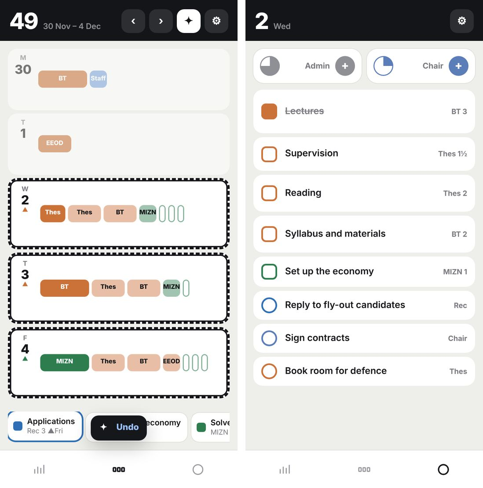
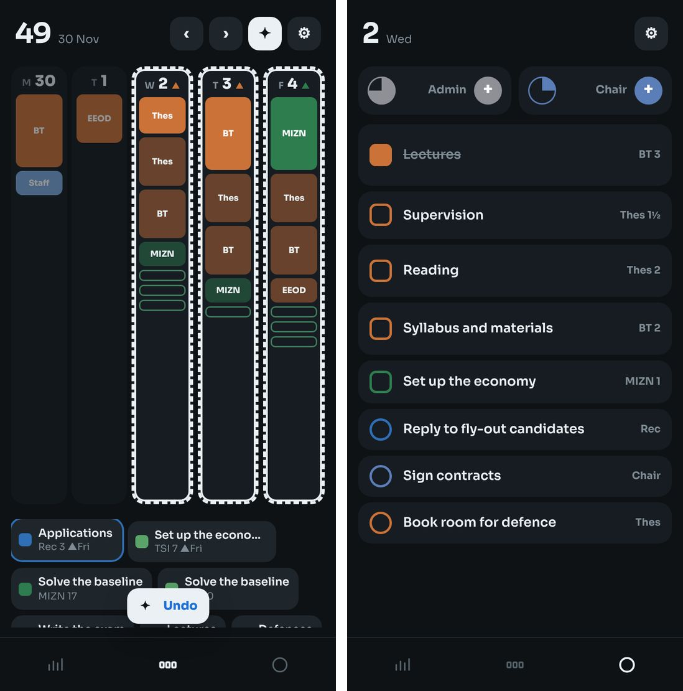
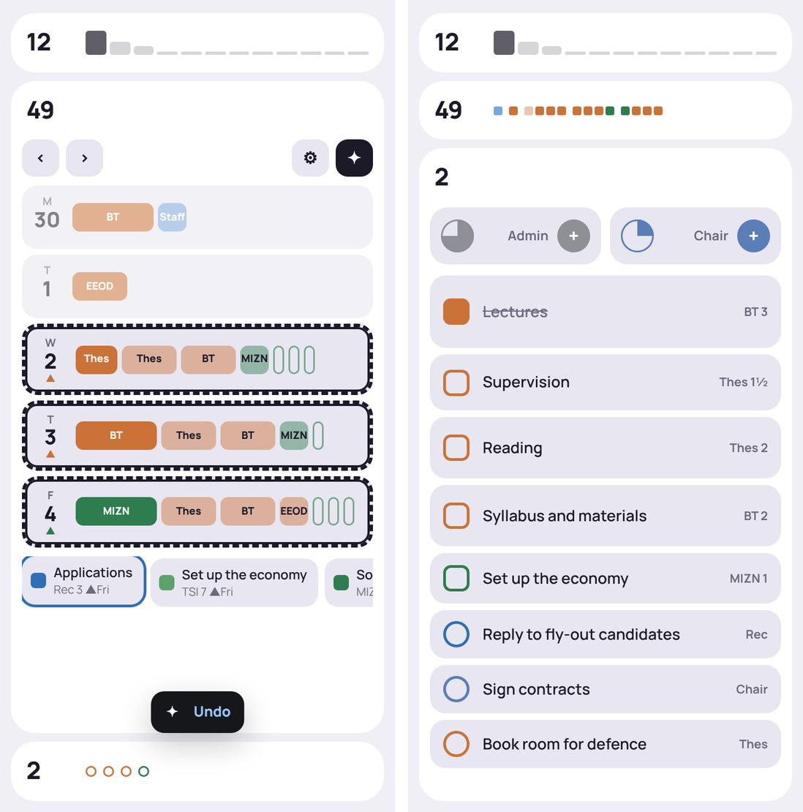
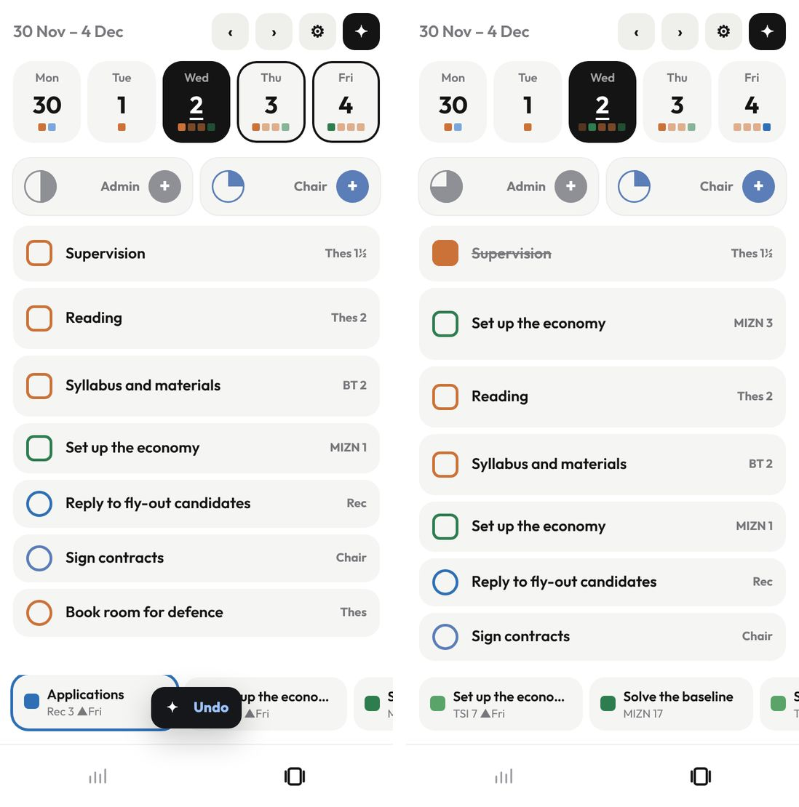
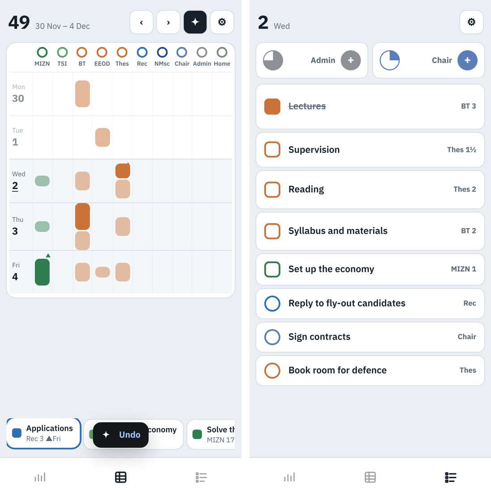

Five apps for one flow: plan long term, fill the week from the tray (tasks and quick tasks; ✦ adds blocks automatically), then tick the day off. Circles are hours, squares are blocks, ▲ marks a deadline.

01InkThree tabs, one per step. Long: ten projects across twelve weeks. Week: tap a task in the tray, then a day; ✦ fills the rest. Day: tick blocks off; Admin and Chair take one tap.Open Ink
02NightThe same three steps, in the dark. The week is five tall columns: blocks stack by hour and empty slots show room for research. The tray of tasks sits below. Tap a task, tap a column.Open Night
03StackNo tabs. The three steps sit stacked on one screen: long, week, day. Tap one to open it and the others fold into a thin summary strip. Plan top to bottom, then live in the bottom band.Open Stack
04TrayWeek and day are one screen. Five day pills on top, the chosen day large in the middle, the tray of tasks at the bottom. Tap a task, then a day. On today the blocks tick off.Open Tray
05GridThe 10-project row heads every view. Long is 12 weeks under it, week is five days under it, and each cell holds that project's blocks. Tap a task in the tray, then a day. Day is a plain checklist.Open Grid